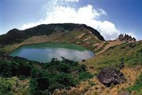
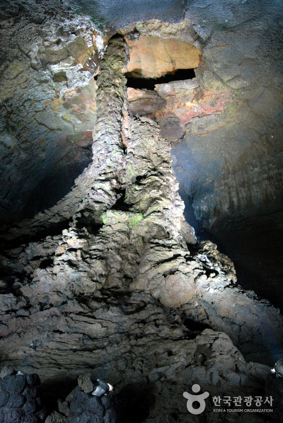
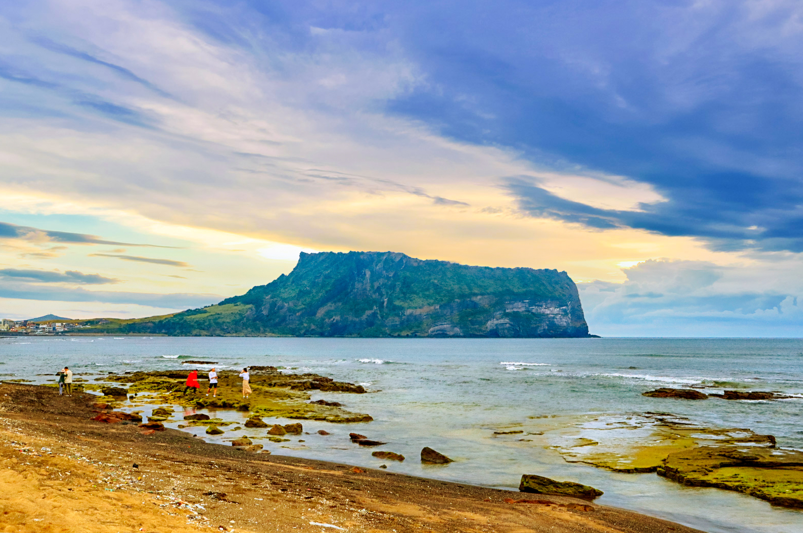
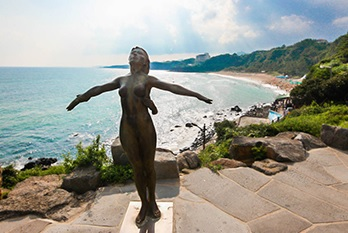
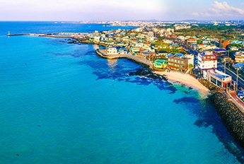
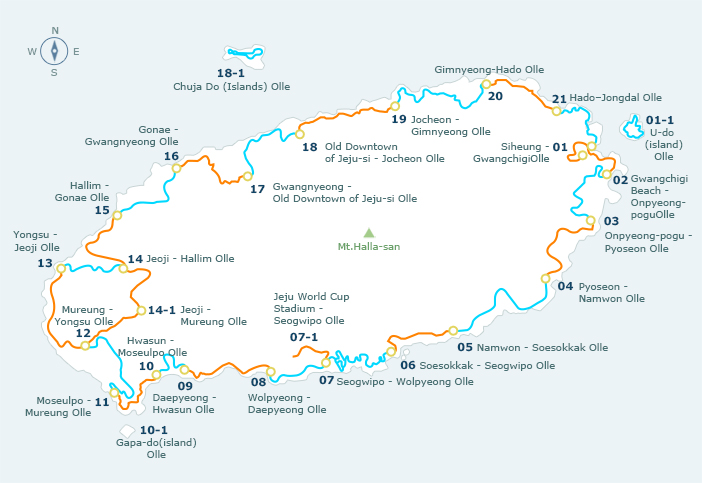
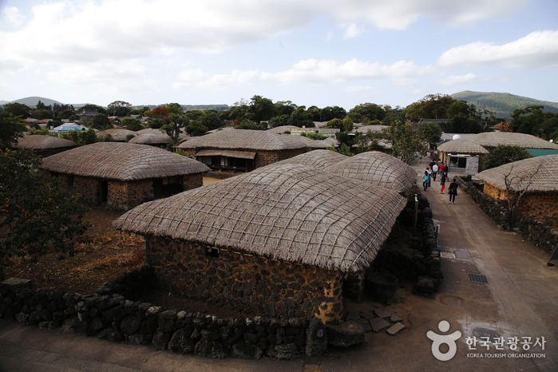
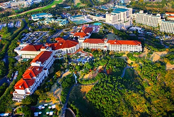

Nature
Hallasan National Park
 Hallasan Mountain rises up proudly from the center of Jeju Island and is perhaps the island’s most memorable landmarks. Also called Mt. Yeongjusan, meaning "mountain high enough to pull the galaxy," Hallasan Mountain is widely known by scientists for its geological value. Designated as a national park in 1970, there are 368 parasitic volcanoes called Oreums (peaks) around the main mountain.
Manjanggul Cave
 Lava Tube is located in Gimnyeong-ri, Gujwaeup, Jeju City. At 23m high, 30m high and 8.928km long, it is the 12th-longest lava tube in the world and the second longest on Jeju island. It is regarded as having significant scientific and heritage value, owing to its excellent condition of preservation despite its age of formation (about 300,000 to 200,000 years ago).
Seongsan IlChulbong Park(tuff cone)
 Seongsan Ilchulbong Peak rose from under the sea in a volcanic eruption over 100,000 years ago. Located on the eastern end of Jejudo Island, there is a huge crater at the top of Seongsan Ilchulbong Peak. The crater is about 600m in diameter and 90m high. With the 99 sharp rocks surrounding the crater, it looks like a gigantic crown. While the southeast and north sides are cliffs, the northwest side is a verdant grassy hill that is connected to the Seongsan Village. The ridge provides an ideal spot for walks and for horse riding as well. The sunrise from the crater is magnificent. Also the Seongsan Ilchulbong peak surrounded by bright yellow colored canola flowers in the spring is truly a sight to behold.
Beaches
Jungmun Saekdal Beach
 With a slope of 5 degrees and average depth of 1.2m, Jungmun Saekdal Beach is characterized by white arch-shaped sandy shore and four distinctive colored sands of white, black, red and gray called jinmosal. This colorful sandy beach is 560m in length and 50m in width and has appeared in several dramas and movies thanks to its beautiful scenery created by Jeju Island’s black basalt and jinmosal. The cliffs that line the shore on the right leads to a naturally formed 15m-long cave. The cliffs are also a habitat for many rare species, serving as a perfect spot for an ecology tour. Jungmun Beach offers a variety of marine sports such as parasailing, water skiing, windsurfing, scuba diving, rafting, and yacht tour for an exciting vacation under the sun.
Soesokkak Estuary
This place is completely awesome. Swesoggak is a river that flows into the ocean, making for a weird mix of warm, salty water on top and refreshingly ice-cold water below. There are rocks to dive from and a few nice platforms to climb down to and have a picnic. Next to the river is an interesting black-sand beach that is constantly being worked on to make swimmable (there are too many rocks for easy entrance into the water). There is occasional surf here.
Hyeopjae Beach
 Hyeopjae Beach is one of the best beaches on Jeju Island for swimmers, since the waters are shallow with no sudden drops. Tiny shells in the sand give the beach a silver sheen and make for a firm feel that is perfect for long walks along the water’s edge. Once you get into the water, you’ll be pleased to discover that the water is so clear that you’ll be able to look down and see your toes!
Jeju Olle Walking
Jeju Olle Walking
 Jeju Olle Trail is a long-distance foot path on Jeju Island, an island off the south-west coast of South Korea. The overall route, mostly following the coastline, consists of 21 connected numbered main routes, 5 sub-routes, and a short spur that connects to Jeju International Airport. The routes have an average length of 16 km and all together total 422 km. The exact length and locations change over time as trails are modified or re-routed.
Jeju Olle Trail was founded by ex-journalist Suh Myung-suk, who worked for Sisa Journal and the original citizen journalism web site, Oh My News. Exhausted after strenuous years working as a journalist, she felt a need to refuel herself. As a way to do this, she walked the Camino de Santiago in Spain. Suh Myung-suk was highly impressed and inspired by the trip, so she decided to create a similar hiking trail on her home island of Jeju. After organizing a team for her goal, she started the time-consuming project of discovering and creating hike-able routes on the island. Suh opened her first trail to the public in September 2007.
Culture
Seongeup Folk Village
 Located at the foot of Halla Mountain on Jeju Island, Seongeup Folk Village is a small town that holds a vast amount of culture. Cultural properties in the folk village have been handed down from generation to generation and include treasures such as residential houses, Confucian shrines and schools, ancient government offices, stone statues, large millstones (pulled by horses or ox), fortress ruins, and stone monuments. Among the cultural gems of the folk village are intangible cultural assets such as folk plays, native foods, local folk craftsmanship, and local dialect. Even the trees are an important part of the area’s heritage. Several zelkova and nettle trees that are hundreds of years old stand at the center of the village, preserving the dignified atmosphere of a bygone era.
Jeju Folk Village Museum
With a total of 117 houses and facilities, Jeju Folk Village has restored the scenes of the village to that of the 1890’s. Among them are Mountain Village, Hill-Country Village, Fishing Village and Shamanism Village. On land of more than 40 acres it has been reconstructed following long-term research and analysis of experts. Some of the extensive range of folk items on display are 1,627 woodenware, 1,046 bamboo ware, 1,699 earthenware, 1,544 porcelain ware, 765 wax candles, 921 ironware and 579 other items. The Jeju Folk Village is the island’s main tourist attraction where customs of the old days can be explored.
Shopping
Jungmun Resort Complex
 Jungmun Resort is a multi tourism area of Jejudo Island and the largest resort in Korea. It is located on the seashore of Jungmun area in Seogwipo. Its facilities blend in beautifully with its surrounding nature, and in 1971, it was designated an International Tour Site. In the Resort, there are many interesting sites to visit, such as Pacific Land, Yeomiji Arboretum, fishing village for tourists, Seonimgyo Bridge, Cheonjeyeon waterfall, and Jungmun Beach. Also there are great hotels such as Shilla Hotel, Lotte Hotel, and the Hyatt Hotel that are internationally well known because celebrities often visit from abroad. This is the biggest Tourist complex in Korea.